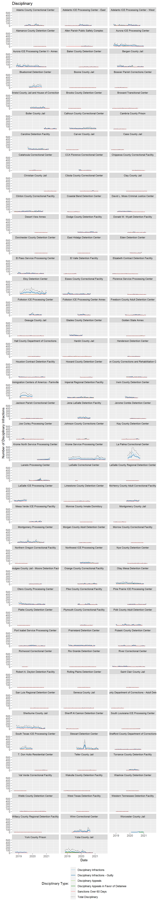

As a matter of law, ICE detention is not punitive it is purely administrative civil holding to ensure that individuals are present for their immigration proceedings. Despite that fact, there is a tremendous amount of punitive disciplinary measures that take place in ICE detention. Some of this information on discipline in ICE detention is logged in facility inspections. As seen in the tables below, during the current sample period there were more than 42,000 disciplinary infractions.
# Load necessary libraries
# Reading and wrangling
library(googlesheets4)
library(readr)
library(tidyverse)## -- Attaching packages --------------------------------------- tidyverse 1.3.1 --## v ggplot2 3.3.4 v dplyr 1.0.6
## v tibble 3.1.1 v stringr 1.4.0
## v tidyr 1.1.3 v forcats 0.5.1
## v purrr 0.3.4## -- Conflicts ------------------------------------------ tidyverse_conflicts() --
## x dplyr::filter() masks stats::filter()
## x dplyr::lag() masks stats::lag()library(janitor)##
## Attaching package: 'janitor'## The following objects are masked from 'package:stats':
##
## chisq.test, fisher.testlibrary(lubridate)##
## Attaching package: 'lubridate'## The following objects are masked from 'package:base':
##
## date, intersect, setdiff, unionlibrary(DT)
# Plotting
library(ggplot2)
library(RColorBrewer)
# Tables
library(kableExtra)##
## Attaching package: 'kableExtra'## The following object is masked from 'package:dplyr':
##
## group_rows# Load custom function
source("function_clean_facility_names.R", local = knitr::knit_global())# Read Google Sheet incident worksheet, convert to data frame, and wrangle
df_324_inc <- read_sheet("https://docs.google.com/spreadsheets/d/1im5VSi3bIEi13O8WQ56wEIXSyNEstbGMylXXgD9bAG0/edit#gid=1858227071",
sheet="G-324A-19-inc",
col_types = "c") %>%
clean_names() %>%
# Run custom cleaning function
clean_facility_names() %>%
# df_specific changes
unite(date, year:month) %>%
mutate(facility = as.factor(facility),
state = as.factor(state),
date = ym(date)
) %>%
mutate_at(c(6:76), as.numeric)## > Using an auto-discovered, cached token## To suppress this message, modify your code or options to clearly consent to
## the use of a cached token## See gargle's "Non-interactive auth" vignette for more details:## <https://gargle.r-lib.org/articles/non-interactive-auth.html>## > The googlesheets4 package is using a cached token for 'n8craig@gmail.com'## Reading from "000inspection_forms"## Range "'G-324A-19-inc'"## New names:
## * `Sexual abuse allegations detainee on staff/contractor/volunteer` -> `Sexual abuse allegations detainee on staff/contractor/volunteer...29`
## * `Sexual abuse allegations detainee on staff/contractor/volunteer` -> `Sexual abuse allegations detainee on staff/contractor/volunteer...34`## Warning: Expected 2 pieces. Missing pieces filled with `NA` in 12 rows [2144,
## 2145, 2146, 2147, 2148, 2149, 2150, 2151, 2152, 2153, 2154, 2155].## Warning: 1 failed to parse.## Warning in mask$eval_all_mutate(quo): NAs introduced by coercion
## Warning in mask$eval_all_mutate(quo): NAs introduced by coercion
## Warning in mask$eval_all_mutate(quo): NAs introduced by coercion
## Warning in mask$eval_all_mutate(quo): NAs introduced by coercion
## Warning in mask$eval_all_mutate(quo): NAs introduced by coercion
## Warning in mask$eval_all_mutate(quo): NAs introduced by coercion
## Warning in mask$eval_all_mutate(quo): NAs introduced by coercion
## Warning in mask$eval_all_mutate(quo): NAs introduced by coercion
## Warning in mask$eval_all_mutate(quo): NAs introduced by coercion
## Warning in mask$eval_all_mutate(quo): NAs introduced by coercion
## Warning in mask$eval_all_mutate(quo): NAs introduced by coercion
## Warning in mask$eval_all_mutate(quo): NAs introduced by coercion
## Warning in mask$eval_all_mutate(quo): NAs introduced by coercion
## Warning in mask$eval_all_mutate(quo): NAs introduced by coercion
## Warning in mask$eval_all_mutate(quo): NAs introduced by coercion
## Warning in mask$eval_all_mutate(quo): NAs introduced by coercion
## Warning in mask$eval_all_mutate(quo): NAs introduced by coercion
## Warning in mask$eval_all_mutate(quo): NAs introduced by coercion
## Warning in mask$eval_all_mutate(quo): NAs introduced by coercion
## Warning in mask$eval_all_mutate(quo): NAs introduced by coercion
## Warning in mask$eval_all_mutate(quo): NAs introduced by coercion
## Warning in mask$eval_all_mutate(quo): NAs introduced by coercion
## Warning in mask$eval_all_mutate(quo): NAs introduced by coercion
## Warning in mask$eval_all_mutate(quo): NAs introduced by coercion
## Warning in mask$eval_all_mutate(quo): NAs introduced by coercion
## Warning in mask$eval_all_mutate(quo): NAs introduced by coercion
## Warning in mask$eval_all_mutate(quo): NAs introduced by coercion
## Warning in mask$eval_all_mutate(quo): NAs introduced by coercion
## Warning in mask$eval_all_mutate(quo): NAs introduced by coercion
## Warning in mask$eval_all_mutate(quo): NAs introduced by coercion
## Warning in mask$eval_all_mutate(quo): NAs introduced by coercion
## Warning in mask$eval_all_mutate(quo): NAs introduced by coercion
## Warning in mask$eval_all_mutate(quo): NAs introduced by coercion
## Warning in mask$eval_all_mutate(quo): NAs introduced by coercion
## Warning in mask$eval_all_mutate(quo): NAs introduced by coercion
## Warning in mask$eval_all_mutate(quo): NAs introduced by coercion
## Warning in mask$eval_all_mutate(quo): NAs introduced by coercion
## Warning in mask$eval_all_mutate(quo): NAs introduced by coercion
## Warning in mask$eval_all_mutate(quo): NAs introduced by coercion
## Warning in mask$eval_all_mutate(quo): NAs introduced by coercion
## Warning in mask$eval_all_mutate(quo): NAs introduced by coercion
## Warning in mask$eval_all_mutate(quo): NAs introduced by coercion
## Warning in mask$eval_all_mutate(quo): NAs introduced by coercion
## Warning in mask$eval_all_mutate(quo): NAs introduced by coercion
## Warning in mask$eval_all_mutate(quo): NAs introduced by coercion
## Warning in mask$eval_all_mutate(quo): NAs introduced by coercion
## Warning in mask$eval_all_mutate(quo): NAs introduced by coercion
## Warning in mask$eval_all_mutate(quo): NAs introduced by coercion
## Warning in mask$eval_all_mutate(quo): NAs introduced by coercion
## Warning in mask$eval_all_mutate(quo): NAs introduced by coercion
## Warning in mask$eval_all_mutate(quo): NAs introduced by coercion
## Warning in mask$eval_all_mutate(quo): NAs introduced by coercion
## Warning in mask$eval_all_mutate(quo): NAs introduced by coercion
## Warning in mask$eval_all_mutate(quo): NAs introduced by coercion
## Warning in mask$eval_all_mutate(quo): NAs introduced by coercion
## Warning in mask$eval_all_mutate(quo): NAs introduced by coercion
## Warning in mask$eval_all_mutate(quo): NAs introduced by coercion
## Warning in mask$eval_all_mutate(quo): NAs introduced by coercion
## Warning in mask$eval_all_mutate(quo): NAs introduced by coercion
## Warning in mask$eval_all_mutate(quo): NAs introduced by coercion
## Warning in mask$eval_all_mutate(quo): NAs introduced by coercion
## Warning in mask$eval_all_mutate(quo): NAs introduced by coercion
## Warning in mask$eval_all_mutate(quo): NAs introduced by coercion
## Warning in mask$eval_all_mutate(quo): NAs introduced by coercion
## Warning in mask$eval_all_mutate(quo): NAs introduced by coercion
## Warning in mask$eval_all_mutate(quo): NAs introduced by coercion
## Warning in mask$eval_all_mutate(quo): NAs introduced by coercion
## Warning in mask$eval_all_mutate(quo): NAs introduced by coercion
## Warning in mask$eval_all_mutate(quo): NAs introduced by coercion
## Warning in mask$eval_all_mutate(quo): NAs introduced by coercion
## Warning in mask$eval_all_mutate(quo): NAs introduced by coerciondf_discipline <- df_324_inc %>%
# Subset the df to only the used cols
select(id, facility, date,
disciplinary_infractions:
sanctions_over_60_days
) %>%
# Need the rowwise function to compute a row-at-a-time
# in the following mutate function
rowwise(id) %>%
# Create a new total column
mutate(total_disciplinary = sum(c_across(
disciplinary_infractions:
sanctions_over_60_days
))) %>%
# Call a range of table columns and pivot long
pivot_longer(.,
cols= disciplinary_infractions:total_disciplinary,
names_to = "disciplinary_type",
values_to = "disciplinary_count") %>%
# Remove NA values
drop_na() %>%
# Explicitly set factor levels
mutate(disciplinary_type = factor(disciplinary_type, levels =c(
"disciplinary_infractions",
"disciplinary_infractions_guilty",
"disciplinary_appeals",
"disciplinary_appeals_found_in_favor_of_detainee",
"sanctions_over_60_days",
"total_disciplinary"
)))df_discipline %>%
group_by(disciplinary_type) %>%
summarise(`Total Disciplinary by Type` = sum(disciplinary_count)) %>%
ungroup() %>%
kable(caption = "Total Disciplinary by Type",
col.names = c("Discipline Type", "Total Discipline Type")) %>%
kable_styling(c("hover", "striped", "condensed", "responsive"))| Discipline Type | Total Discipline Type |
|---|---|
| disciplinary_infractions | 25089 |
| disciplinary_infractions_guilty | 19610 |
| disciplinary_appeals | 1234 |
| disciplinary_appeals_found_in_favor_of_detainee | 295 |
| sanctions_over_60_days | 30 |
| total_disciplinary | 45547 |
df_discipline %>%
group_by(facility) %>%
summarise(total_disciplinary = sum(disciplinary_count)) %>%
arrange(desc(total_disciplinary)) %>%
ungroup() %>%
kable(caption = "Total Discipline by Facility",
col.names = c("Facility", "Total Discipline by Facility")) %>%
kable_styling(c("hover", "striped", "condensed", "responsive")) %>%
scroll_box(height = "300px")| Facility | Total Discipline by Facility |
|---|---|
| Eloy Detention Center | 7128 |
| La Palma Correctional Center | 6954 |
| Krome Service Processing Center | 4888 |
| Sherburne County Jail | 4070 |
| Immigration Centers of America - Farmville | 3808 |
| Yuba County Jail | 3712 |
| Stewart Detention Center | 3068 |
| Aurora ICE Processing Center | 2678 |
| Aurora ICE Processing Center II - Annex | 2678 |
| Otay Mesa Detention Center | 2504 |
| Winn Correctional Center | 2264 |
| Calhoun County Correctional Center | 2098 |
| Montgomery Processing Center | 2060 |
| Caroline Detention Facility | 1954 |
| Bluebonnet Detention Center | 1926 |
| Otero County Processing Center | 1924 |
| South Texas ICE Processing Center | 1912 |
| Prairieland Detention Center | 1596 |
| Bergen County Jail | 1432 |
| Essex County Correctional Facility | 1304 |
| Adelanto ICE Processing Center - West | 1284 |
| El Paso Service Processing Center | 1246 |
| Imperial Regional Detention Facility | 1240 |
| Jena LaSalle Detention Facility | 1234 |
| Bristol County Jail and House of Correction | 1186 |
| LaSalle ICE Processing Center | 1176 |
| Clinton County Correctional Facility | 1166 |
| Northwest ICE Processing Center | 1070 |
| Polk County Adult Detention Center | 1010 |
| River Correctional Center | 924 |
| Laredo Processing Center | 888 |
| Port Isabel Service Processing Center | 848 |
| Glades County Detention Center | 822 |
| Folkston ICE Processing Center | 814 |
| McHenry County Adult Correctional Facility | 796 |
| Adams County Correctional Center | 756 |
| Pulaski County Detention Center | 746 |
| Adelanto ICE Processing Center - East | 742 |
| Irwin County Detention Center | 680 |
| Pine Prairie ICE Processing Center | 638 |
| Hudson County Corrections and Rehabilitation Center | 592 |
| York County Prison | 586 |
| Butler County Jail | 566 |
| Pike County Correctional Facility | 560 |
| Folkston ICE Processing Center Annex | 502 |
| David L. Moss Criminal Justice Center | 498 |
| Dodge County Detention Facility | 496 |
| Freeborn County Adult Detention Center | 492 |
| Mesa Verde ICE Processing Facility | 482 |
| Houston Contract Detention Facility | 480 |
| Orange County Correctional Facility | 480 |
| Krome North Service Processing Center | 438 |
| Torrance County Detention Facility | 420 |
| Strafford County Department of Corrections | 400 |
| Webb County Detention Center | 322 |
| Baker County Detention Center | 312 |
| Florence Service Processing Center | 310 |
| Donald W. Wyatt Detention Facility | 262 |
| Plymouth County Correctional Facility | 252 |
| Jackson Parish Correctional Center | 234 |
| Eden Detention Center | 230 |
| Joe Corley Processing Center | 214 |
| Johnson County Corrections Center | 204 |
| CCA Florence Correctional Center | 186 |
| Limestone County Detention Center | 176 |
| Okmulgee County Jail - Moore Detention Facility | 176 |
| Jerome Combs Detention Center | 174 |
| Broward Transitional Center | 166 |
| Allen Parish Public Safety Complex | 158 |
| Elizabeth Contract Detention Facility | 152 |
| Kay County Detention Center | 144 |
| Henderson Detention Center | 136 |
| Hardin County Jail | 132 |
| Wakulla County Detention Facility | 128 |
| Worcester County Jail | 125 |
| El Valle Detention Facility | 124 |
| Nye County Detention Center | 112 |
| Catahoula Correctional Center | 88 |
| Geauga County Jail | 88 |
| Bossier Parish Corrections Center | 80 |
| Montgomery County Jail | 80 |
| Hall County Department of Corrections | 66 |
| Cambria County Prison | 64 |
| Seneca County Jail | 62 |
| Howard County Detention Center | 54 |
| Rio Grande Detention Center | 54 |
| Cibola County Correctional Center | 48 |
| Chippewa County Correctional Facility | 44 |
| Cass County Jail | 40 |
| Coastal Bend Detention Center | 40 |
| Golden State Annex | 40 |
| Morgan County Adult Detention Center | 40 |
| Washoe County Detention Center | 40 |
| Richwood Correctional Center | 28 |
| South Louisiana ICE Processing Center | 28 |
| Sheriff Al Cannon Detention Center | 24 |
| Carver County Jail | 22 |
| Saint Clair County Jail | 20 |
| Northern Oregon Correctional Facility | 18 |
| Shawnee County Department of Corrections - Adult Detention Center | 18 |
| Teller County Jail | 16 |
| Rolling Plains Detention Center | 12 |
| Christian County Jail | 8 |
| Monroe County Inmate Dormitory | 8 |
| San Luis Regional Detention Center | 8 |
| T. Don Hutto Residential Center | 8 |
| West Texas Detention Facility | 8 |
| Clay County Jail | 4 |
| Desert View Annex | 2 |
| Alamance County Detention Center | 0 |
| Boone County Jail | 0 |
| Brooks County Detention Center | 0 |
| Dorchester County Detention Center | 0 |
| East Hidalgo Detention Center | 0 |
| LaSalle Correctional Center | 0 |
| LaSalle County Regional Detention Center | 0 |
| Morrow County Correctional Facility | 0 |
| Platte County Detention Center | 0 |
| Robert A. Deyton Detention Facility | 0 |
| Val Verde Correctional Facility | 0 |
| Western Tennessee Detention Facility | 0 |
| Willacy County Regional Detention Facility | 0 |
# Generating a linetype vector for use in the plot
plot_lines <- c(
"solid",
"solid",
"solid",
"solid",
"solid",
"dotted"
)
# Use Color Brewer to set colors and modify
# the last color to be black for totals.
plot_colors <- brewer.pal(6, "Paired")
plot_colors[6] <- "#000000"
# Create plot labels
plot_labels <- c(
"Disciplinary Infractions",
"Disciplinary Infractions - Guilty",
"Disciplinary Appeals",
"Disciplinary Appeals in Favor of Detainee",
"Sanctions Over 60 Days",
"Total Disciplinary")
df_discipline %>%
# Calling the plot and formatting
ggplot(aes(x=date,
y = disciplinary_count,
linetype = disciplinary_type))+
geom_line(aes(color = disciplinary_type), size = .65) +
# Set the linetype
scale_linetype_manual(
values = plot_lines,
labels = plot_labels,
name = "Disciplinary Type:",
guide = guide_legend(nrow = 6)
)+
# Setting the color
scale_color_manual(
values = plot_colors,
labels = plot_labels,
name = "Disciplinary Type:"
)+
labs(title = "Disciplinary")+
ylab("Number of Disciplinary Infractions")+
xlab("Date")+
theme(
strip.text = element_text(size = 8),
legend.position = "bottom"
)+
# Set the legend to multiple rows
guides(col = guide_legend(nrow =6))+
# Wrap
facet_wrap(~ facility, ncol=3)